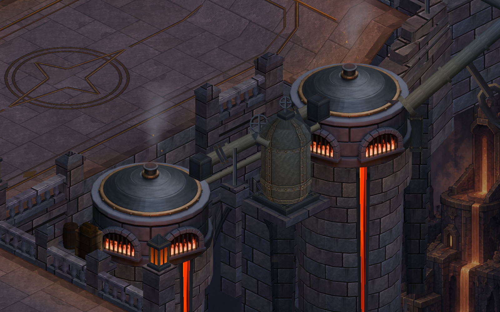
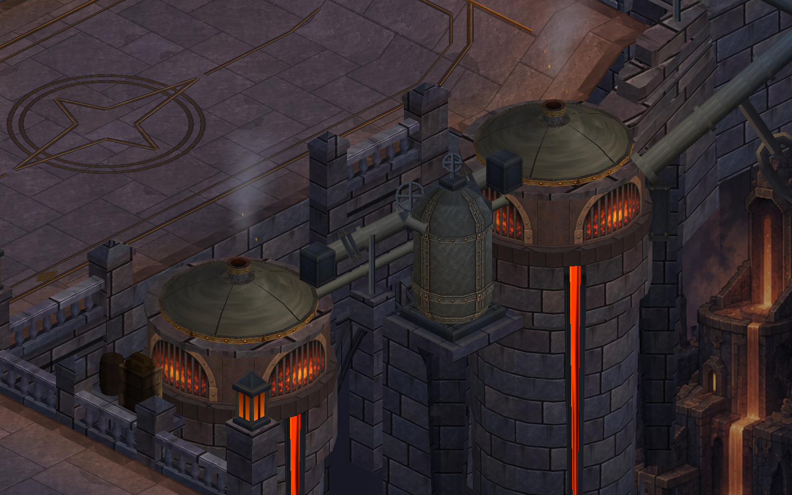
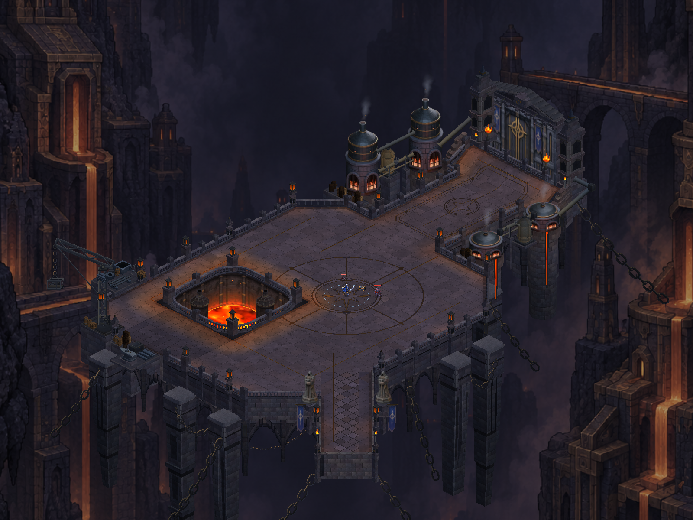

Küçük fırınlara ayrı bir biçim
Basık kemerli ateş ağızları, geniş metal kapak ve kısa baca. Büyük kuzey fırınlarıyla ortak malzeme dili; ön tarafta kahramanı örtmeyen alçak siluet.

Aynı kamerayla karşılaştırma

Önce · eski yapı yeniden oluşturulduSonra · yeni kemerli gövdeOyun çerçevesi
Gerçek Unity görüntüleri; HUD gizli, kahraman yürünebilir noktalarda.
Harita bütünü

21 çizici, 99.492 vertex. Kaynak model oyunda çizilmiyor; görünümü sıkıştırılmış bir doku taşıyor. Boru malzemeleri ve hedef referansın tüm yüzey kalitesi henüz tamamlanmadı.
Teknik kayıt ve doğrulama · Düzenlenebilir Blender dosyası